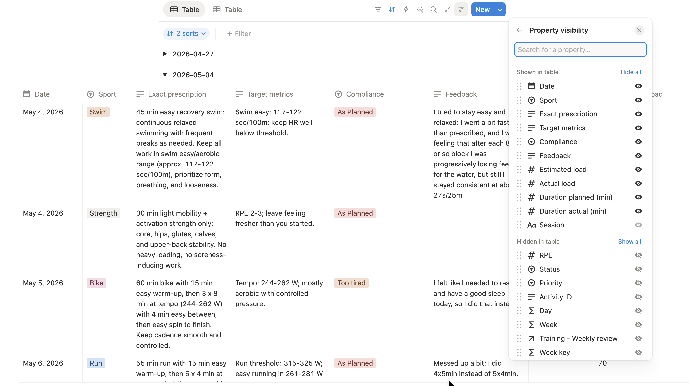
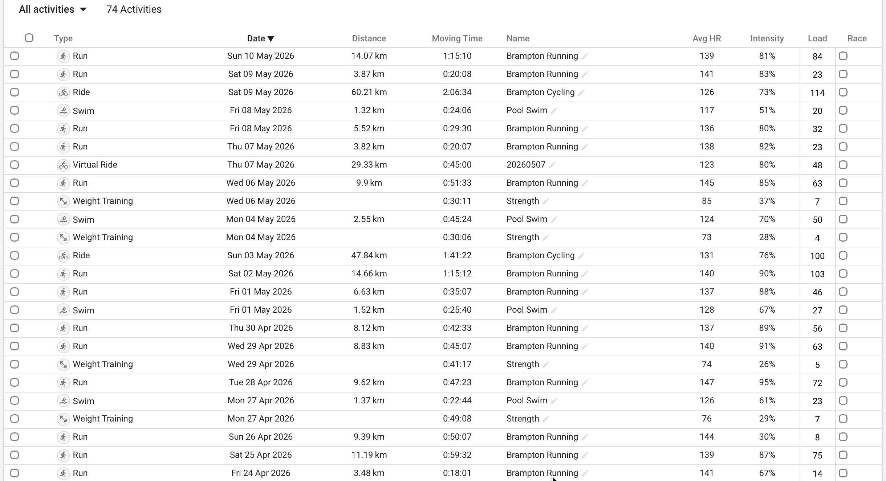

flowchart LR
A["Data tables"] --> B["Normalization layer"]
C["Fitness data source"] --> B
B --> D["coach_state and planning context"]
D --> E["LLM request"]
E --> F["Structured JSON plan"]
F --> G["Validation engine"]
G -->|pass| H["Persist to data tables"]
G -->|fail| I["Targeted repair request"]
I --> E
The challenge
Concrete problem
The concrete problem was personalized training under a system I could reliably control.
There are several obvious ways to get training plans, but each one has a clear limitation.
Get a human coach. This is still the best option, but it is not always financially feasible.
Download static plans. They are easy to obtain, but they do not adapt well to individual specifics, changing goals, current fitness, or shifting weekly availability.
Use a purchased adaptive system. Products such as Humango solve part of the adaptation problem, but the workflow is owned by the product. If the product changes behavior, removes a feature, or gradually falls out of sync with the athlete’s workflow, the user has very little control. There is also limited visibility into how the underlying models behave or degrade over time.
Use generic LLM chat directly. This is flexible, but it drifts. As the conversation grows, responses become slower, context handling becomes less reliable, updated zones and scheduling constraints are not always applied consistently, and hallucinations become more likely.
The goal of this article is the next option: a custom system that produces personalized plans, but does so transparently, reliably, and at a cost that is still reasonable.
In practice, that means a workflow that can:
- read real availability and scheduling constraints at any time
- use current zones and athlete settings from a canonical source
- incorporate recent training outcomes and season context
- generate a weekly plan as structured output
- validate that output against hard rules
- repair invalid plans
Abstract problem
The training use case is specific, but the engineering problem is broader. At a more abstract level, this is a stateful workflow design problem: how to use an LLM inside a system that must remain inspectable, repeatable, and cheap enough to run continuously.
The point was not to prove that an LLM can replace a human coach. It cannot. The point was to build a system where an LLM can contribute useful synthesis without being trusted for state management, validation, or business rules.
Abstract Design
Core Design Principle
The guiding principle is simple:
Use the LLM model for synthesis. Use code and tables for state, constraints, and repeatability.
This principle drove several concrete design decisions:
- store athlete profile, availability, races, season plan, and training settings in stable tables
- normalize season-aware coaching state before prompting the model
- keep prompt instructions stable and versioned
- validate generated plans in code against hard rules and repair iteratively if needed
This architecture is less magical than a giant chat thread, but much more reliable.
The pattern generalizes well beyond endurance training. It applies to scheduling, operations tooling, content production pipelines, intake systems, and any domain where the LLM should assist decisions without becoming the system of record.
Once that pattern is clear, the concrete stack becomes almost incidental.
This pattern is also not unique to training. It is closely aligned with the way several established commercial tools constrain model behavior.
In analytics tools such as Databricks Genie Workspaces, natural-language questions are not answered by giving the model unconstrained freedom over an entire data estate. The system narrows the problem through known tables, curated schemas, and code-like query boundaries so that common questions resolve to trusted implementations rather than improvised reasoning.
The same idea appears in specialized agent tooling such as Claude Gems, where the goal is not a fully general assistant but a narrowly instructed agent that performs one task well under a stable set of detailed instructions.
This workflow follows the same design instinct. It is home-built, but not ad hoc. The point is to combine editable state, persistent instructions, deterministic validation, and narrow model scope in a way that matches the better practices already visible in mature commercial systems.
High-Level Architecture
The important architectural point is that the LLM never receives raw authority. It receives a normalized context object and returns structured output. The surrounding code remains responsible for enforcement.
Validation and Repair
The planning workflow does not stop at “the model returned JSON.”
The generated week is validated against hard rules, for example:
- session dates must stay inside the target week
- day names must match dates
- sports must be allowed on that date
- daily maximum sessions cannot be exceeded
- weekday duration caps are enforced
- brick sessions must be split into ordered single-sport rows with consistent naming
This moves correctness from prompt wishfulness to executable logic.
That distinction matters. Prompting can express intent. Validation enforces the contract.
One of the more useful design choices is targeted repair.
If one or two sessions violate constraints, I do not throw away the whole week and ask for a brand-new plan. I send back only the rejected sessions or affected dates, along with the original rules, and ask for replacements.
This provides two concrete advantages:
- lower token usage, therefore lower cost
- less unnecessary churn in valid parts of the plan
That second point is operationally important. Whole-plan regeneration tends to create drift even when most of the original output was acceptable. Constraining the repair scope keeps the system stable.
Failure Modes Observed in Practice
The architecture was shaped by specific failure modes rather than by abstract design preference.
The most common problems I faced when I used plain ChatGPT were:
- context growth making generic chat slower and less predictable
- stale zones or stale scheduling assumptions being reused by the model
- day and date confusion in longer-running chat threads
- invalid session assignments such as prescribing a sport that was not allowed on a given day
- plans that exceeded session-count or duration limits
- unstable full-week regeneration where fixing one bad session created a new error elsewhere
Each of those failure modes maps to a design response.
- Structured tables replace remembered chat context.
- Normalized payloads replace prose-heavy state reconstruction.
- Persistent prompt files hold stable rules.
- Python validation catches contract violations.
- Targeted repair replaces full-week re-generation.
That mapping is important because it shows that the workflow was not designed in one pass. It was tightened in response to actual system behavior.
Practical Implementation
At this point, the article stops being purely architectural. The system is not just designed around these abstractions; it is implemented through concrete artifacts: prompt files, normalized JSON payloads, validation rules, repair requests, and terminal-visible usage data.
System Components
This is my current stack. Nothing cutting edge. Simply the set of tools I was already using and that fit my workflow without friction.
Intervals.icufor endurance-specific source data such as completed activities, planned targets, wellness, and annual-plan phase signalsNotionfor structured, editable operational data. It is effectively the database, but also one of the main visualization layersPythonfor orchestration, normalization, validation, and artifact generationOpenAIfor weekly review text generation and structured session planning
The point of this stack is not novelty. The point is that each tool is already good at one part of the workflow: fitness data, operational state, deterministic logic, or structured generation.
System Boundaries
The stack alone does not explain the design. What matters is the ownership boundary between layers.
- Notion tables hold editable operational state: availability, athlete profile, races, season plan, plan rows, review rows, and coach-managed settings.
- Python code owns normalization, orchestration, validation, writing artifacts, and repair-loop control.
- Persistent prompt files hold stable behavioral instructions that should not be rewritten every week.
- Model-generated outputs are limited to narrow artifacts such as structured session plans or weekly narrative review text.
In short: Intervals.icu provides training data, Notion holds editable state, Python owns workflow logic, prompt files hold durable instructions, and the model is limited to narrow outputs. That separation answers one of the most important implementation questions: what lives in data, what lives in code, what lives in prompt files, and what is left to the model.
Data Model
Most of the reliability in this project comes from the shape of the data, not the cleverness of the prompts.
I maintain dedicated Notion tables for:
- weekly availability
- weekly plan
- weekly review
- races
- athlete profile
- season plan
- athlete settings and zones
This has three benefits.
- The model receives current values from a single canonical source instead of chat memory.
- Fields such as availability, load targets, and preferences become easy to serialize into a compact payload.
- The workflow becomes inspectable: if a plan is wrong, I can inspect the exact upstream row or artifact that produced it.
When I say maintain, I do not mean constant manual upkeep. I designed the workflow so manual intervention stays minimal. I edit personal and subjective information such as session feedback or weekly availability, but the large majority of fields are filled automatically by the system. My manual edits mostly provide constraints and overrides.
The database layout can be summarized like this:
flowchart TD
A["Weekly availability"]
B["Athlete settings<br/>zones and thresholds"]
C["Athlete profile"]
D["Season plan"]
E["Races"]
F["Weekly plan"]
G["Weekly review"]
A --> P["Weekly planning context"]
B --> P
C --> H["coach_state builder"]
D --> H
E --> H
G --> H
H --> P
P --> F
F --> G
This is not a strict relational schema. It is an operational data model: several Notion tables feed a normalized planning context, the generated weekly plan becomes its own table, and completed weeks roll forward into the review and coaching-state layer.
Prompt Engineering
The prompt design follows the same separation of concerns as the rest of the system.
Variable prompt components stay in editable data sources. Weekly availability, allowed sports, athlete settings, season context, race context, and weekly review trends all live in Notion tables or normalized JSON artifacts generated from them. Those are the parts I expect to change every week, so they need to remain easy to edit without touching code or prompt files.
Constant prompt components live in persistent instruction files. This is where I define stable behavioral rules such as:
- stay within the maximum allocated time
- only prescribe sessions for sports allowed on that day
- respect weekly session limits
- keep weekday sessions short unless the context strongly justifies otherwise
- format brick workouts in a predictable way
This split matters for two reasons.
First, it keeps the high-variance parts of the prompt editable by changing data, not by rewriting instructions every week. Second, it keeps the high-confidence rules stable across runs. The model does not have to rediscover them from examples or from chat history because they are always present in the persistent context prompt.
In practice, this means the prompt is not one giant block of prose. It is the combination of a stable instruction layer and a variable data payload. That is much easier to reason about, easier to audit, and cheaper to run repeatedly.
A small excerpt from the persistent planning prompt looks like this:
Planning rules:
- return only sessions that fit the availability and constraints
- never exceed max_sessions for a date
- only prescribe sports listed in allowed_sports for that date
- sessions scheduled Monday through Friday should usually be between
45 and 60 minutes maximum
- every brick segment must be its own rowThat excerpt matters because these rules do not change every week. They belong in a stable instruction layer, not in ad hoc edits to the prompt body.
Operational Characteristics
The current numbers are still based on a small sample, but they are already good enough to make the discussion more concrete. In the logged runs so far, a weekly review generation took 2,328 total tokens and about 4.3 seconds. The planning runs were heavier, as expected. Two logged planning runs consumed 12,761 and 13,925 total tokens respectively, across two requests each: the initial plan plus one targeted repair pass. End-to-end OpenAI latency for those runs was 18.6 seconds and 14.4 seconds.
Using the specific model in these runs, gpt-5.4-mini, and OpenAI standard API pricing as of May 10, 2026, that translated to roughly $0.0028 USD for the weekly review run and about $0.0155 to $0.0174 USD for the planning runs with one repair pass. Using an exchange rate of about 1 USD = 1.365 CAD on the same date, that is roughly $0.0039 CAD for the review and about $0.0211 to $0.0238 CAD for the planning runs.
| Run | Requests | Input tokens | Output tokens | Total tokens | Latency | Repair passes | Approx. USD | Approx. CAD |
|---|---|---|---|---|---|---|---|---|
| Weekly review | 1 | 2,038 | 290 | 2,328 | 4.3 s | 0 | $0.0028 | $0.0039 |
| Weekly plan A | 2 | 11,191 | 1,570 | 12,761 | 18.6 s | 1 | $0.0155 | $0.0211 |
| Weekly plan B | 2 | 12,062 | 1,863 | 13,925 | 14.4 s | 1 | $0.0174 | $0.0238 |
That is not enough data to claim a stable long-term average yet, but it is enough to show the operating shape of the system. The expensive step is the weekly plan generation, not the review. The repair loop does add overhead, but it does so in a narrow and predictable way rather than by forcing a full re-generation of the week.
Concrete Training Example
Now that the architecture, data model, and prompt design are clear, it is easier to see how the pieces fit together in a concrete workflow.
Step 1: Sync Notion and intervals.icu
Suppose I have just finished a week of training. The Notion plan table will contain the planned sessions together with completion and feedback fields.

At the same time, Intervals.icu will have the detailed execution data imported from Garmin. I use Intervals.icu rather than Garmin directly because it has a good API and is inexpensive.

After the feedback columns in Notion have been updated for each session, the first workflow step is to synchronize Notion with Intervals.icu.
This step is simple by design. It reads execution details from the Intervals.icu API and writes them into the appropriate Notion columns. For example, the actual training load from an executed session is stored so it can later be compared against the planned load.
Step 2: Generate a weekly review
In this step, the information stored in Notion tables, mostly the weekly plan, is compiled into a standardized JSON payload. That payload is combined with a curated context prompt and sent to OpenAI to generate a weekly review. The result is written back into a Notion table, and the code lets me inspect both the payload and the token consumption.
There is still some room for hallucination, but the risk is reduced by giving the model a clear JSON structure it can use to compare plan versus execution and infer trends.
(venv) adrianstevejoseph@Adrians-MacBook-Air training_automation % python 02_plan_next_week.py
Planning week starting 2026-05-11
Targets: {'Run': 174.0, 'Bike': 198.0, 'Swim': 44.0}
Active anchors: {'bike_ftp': 253, 'run_cp': 461, 'swim_css': 102, 'bike_z2': (157, 175), 'bike_tempo': (202, 218), 'bike_vo2': (278, 291), 'run_easy': (360, 387), 'run_aero': (373, 396), 'run_mod': (401, 420), 'run_thr': (433, 447), 'swim_easy': (117, 122), 'swim_aero': (110, 114), 'swim_css_range': (105, 107)}
Season context: phase=Build, block=None, weeks_to_next_a_race=5.9
OpenAI model: gpt-5.4-mini
OpenAI planning response request token estimate: input~4821
OpenAI planning response token usage: input=5042, output=1795, total=6837
OpenAI planning response latency: 11.30s
Generated plan failed validation. Attempting one targeted repair pass...
- Generated weekday session too long on 2026-05-15: bike_long_aerobic is 100 min, expected <= 60
- Generated brick row with invalid name on 2026-05-15: 'run_brick'. Expected '02_run_brick'.
- Generated brick row with invalid name on 2026-05-15: 'bike_brick'. Expected '01_bike_brick'.
- Generated weekday brick too long on 2026-05-15: total brick duration is 120.0 min, expected <= 60.
...
OpenAI repair response request token estimate: input~6876
OpenAI repair response token usage: input=7748, output=304, total=8052
OpenAI repair response latency: 3.33s
OpenAI usage summary:
- requests: 2
- repair passes attempted: 1
- tokens: input=12790, output=2099, total=14889
- cumulative latency: 14.63s
Logged OpenAI usage for week 2026-05-11:
- logged runs: 3
- requests: 6
- tokens: input=36043, output=5532, total=41575
- cumulative latency: 47.60s
- repair passes attempted: 3
Plan summary:
- Run: 235 min, estimated load 215.0
- Bike: 135 min, estimated load 101.0
- Swim: 95 min, estimated load 52.0
- Strength: 60 min, estimated load 30.0
Wrote next_week_plan.json
Wrote next_week_plan.csvStep 3: Generate a plan for next week
Now that the previous week has been reviewed, the next step is to plan the next week of training. That planning problem includes season goals, proximity to key races, current phase, injuries or sickness, general life constraints, and athlete-specific limiters. If all of this is sent to an LLM as a wall of text, the result is usually messy.
The LLM therefore needs constrained freedom and automatic validation.
The approach is similar to the weekly review workflow. Data is fetched from Notion, augmented with Intervals.icu context, consolidated into JSON, and sent together with the persistent instruction prompt.
Stable Inputs, Narrow Outputs
With the architecture, data model, and validation boundary in place, the shape of the model input becomes straightforward.
A simplified planning request looks like this:
{
"availability": [
{
"date": "2026-05-11",
"allowed_sports": ["Run", "Strength"],
"max_sessions": 1,
"notes": "Only evening available"
}
],
"coach_state": {
"season_context": {
"current_phase": "build",
"weeks_to_next_a_race": 6
}
},
"target_loads": {
"run": 240,
"bike": 280
}
}The point of a payload like this is not that it is elegant. The point is that it is explicit. The model no longer has to infer scheduling constraints from prose spread across a month of chat history.
Even with this structure, errors can still appear. The model might schedule a swim on a day where swimming is not allowed, or prescribe sessions longer than the available time. This is where the deterministic Python layer keeps the stochastic model under control. The plan is validated against predetermined rules, and rejected rows are sent back for correction.
However, the entire plan is not sent back. Doing that would increase token consumption and create unnecessary churn. If version 1 has a bad Wednesday and the whole week is regenerated, Wednesday may improve while Friday becomes wrong. Sending back only the rejected session, together with an accurate rejection explanation, keeps the repair focused and the rest of the week stable.
The validation layer produces explicit errors rather than vague human-facing complaints. A typical rejection looks like this:
{
"type": "disallowed_sport",
"message": "Generated disallowed sport on 2026-05-13: Swim not in ['Run']",
"session_key": ["2026-05-13", "Swim", "Threshold swim"]
}That error can then be turned into a narrow repair request. In practice, the repair prompt looks more like this than like a fresh full-week generation:
Validation errors:
- Generated disallowed sport on 2026-05-13: Swim not in ['Run']
Rejected sessions or affected dates to replace:
[
{
"Date": "2026-05-13",
"Day": "Tuesday",
"Session": "Threshold swim",
"Sport": "Swim"
}
]This is the kind of implementation detail that makes the workflow credible. The system is not just asking for a better answer. It is providing a typed rejection, a narrowed scope, and a structured path to recovery.
Human Editing and Oversight
The workflow is not fully automatic, and that is intentional. First of all, I am still refining prompts and implementation details, so I need to be able to intervene manually.
Furthermore, the manual work is intentionally concentrated in the places where human judgment is still useful:
- weekly availability updates
- subjective session feedback
- occasional overrides for unusual constraints, races, travel, or fatigue
Everything else is designed to be normalized, generated, validated, and written automatically.
In practice, the manual burden is already fairly small, although it is not yet zero.
The recurring user input is mostly lightweight feedback rather than data entry. For each completed or skipped session, I record a short note that takes roughly 30 seconds. I also add a brief overall weekly comment after reviewing the generated analysis, which takes about another 30 seconds. Occasionally I also refresh training zones, which is usually about 10 seconds of work when needed.
| Manual step | Frequency | Approx. time |
|---|---|---|
| Session-level feedback on completed or skipped sessions | Per session | ~30 s each |
| Overall weekly feedback on the generated review | Weekly | ~30 s |
| Zone synchronization or refresh | Occasional | ~10 s |
Running the full weekly pipeline currently takes about 5 minutes, but that is not because the system itself is slow. It is mostly because I am still in a full validation phase and manually double-check the outputs. Once the workflow is fully operational, I expect the end-to-end process to run in well under 1 minute.
Tradeoffs and Lessons Learnt
Benefits
The system has worked well for a few concrete reasons:
- it is modular
- it is more repeatable than long-form chat
- it is cost-aware because the prompts are compact and repair is narrow
- it gives clearer failure modes because data, prompts, and validators are inspectable
I deliberately kept the model layer replaceable.
Today the workflow uses OpenAI. Tomorrow it could use Claude or another model behind the same normalization and validation boundary. That is possible because the core value of the system does not live in a vendor-specific prompt. It lives in:
- the data model
- the orchestration code
- the validation rules
- the narrow contract between context and output
That is where most production-minded LLM systems should concentrate their complexity budget.
Possible Drawbacks
- this is more engineering work than using an off-the-shelf product
- the system still requires maintenance when schemas or APIs change
- an experienced user is still needed to spot bad prescriptions, even if the likelihood of it happening is significantly reduced
- software can support coaching judgment, but it does not replace it
Lessons Learnt
- reliability comes more from data modeling and validation than from prompt cleverness
- prompt engineering works better when variable inputs stay in editable data sources and stable rules stay in persistent instruction files
- the more state you ask the model to remember implicitly, the worse the system gets over time
- narrow repair passes are better than full regeneration for both stability and cost
- if the workflow matters, controllability matters as much as model quality
- if a system must remain reliable over time, explicit boundaries matter more than prompt cleverness alone
Portability
The pattern is more portable than the training domain suggests.
What is domain-specific here is the payload content: races, zones, planned load, wellness, and weekly availability. What is reusable is the structure: editable operational state, normalized context, persistent instructions, validation rules, and targeted repair.
The main limitation today is that the workflow is built around the systems I personally use, especially Notion and Intervals.icu. That is acceptable for a single-user or small-scale setup, but it is not the right foundation for a broader multi-user system.
To adapt this pattern to other athletes or coaches, several things would need to change:
- the Notion-backed operational layer would need to be replaced by a more conventional application database
- a dedicated frontend would be needed to unify the user experience and replace Notion as the interactive layer
- connectors would need to be added for other popular fitness platforms such as Garmin and Strava
- the normalization layer would need to become more configurable so that athlete-specific rules, coach preferences, and source-specific schemas could vary without rewriting core logic
All of that is technically feasible. The main issue is not conceptual, but operational: once the system moves beyond a personal workflow, it starts to inherit the usual scaling concerns around architecture, maintenance, support, and cost. The current implementation is not designed for that scope, and it does not need to be.
Future Work
The next additions are relatively clear.
- Add a more explicit way to review and refresh zones so that threshold and anchor changes are surfaced intentionally rather than only flowing through the existing data pipeline.
- Add on-demand single-workout review so that the system can be queried interactively about one session without waiting for the full weekly review cycle.
- Add a dedicated frontend once performance, workflow stability, and token usage have settled enough to justify simplifying the user experience.
At the moment, those additions are less about new ideas than about deciding when the current workflow is stable enough to justify a cleaner interface.
Conclusion
The main value of this system is not that it uses an LLM. The main value is that it puts the LLM inside a workflow that is inspectable, constrained, and replaceable.
That makes the system easier to control than direct chat and more resilient than outsourced product behavior that can change underneath the user. It also produces clearer failure modes: when something goes wrong, the issue can be traced to data, normalization, prompts, or validation rules instead of being treated as an opaque model quirk.
For this kind of problem, that is the real engineering win. The useful abstraction is not “AI coach.” It is a controlled planning system with an LLM as one component.